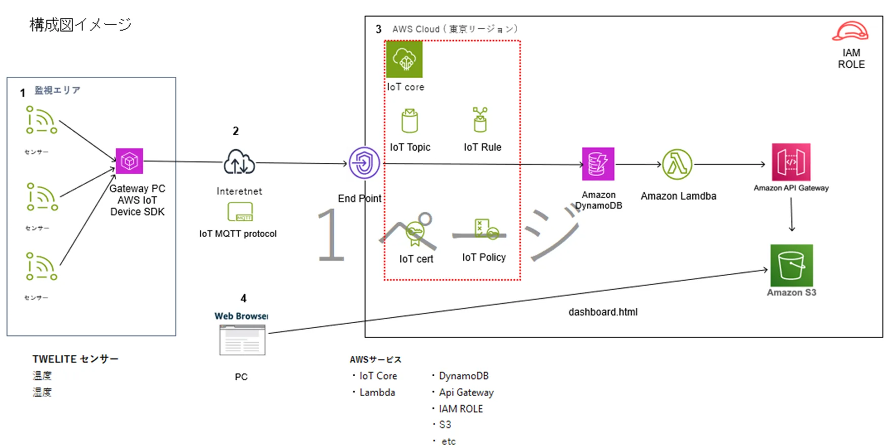
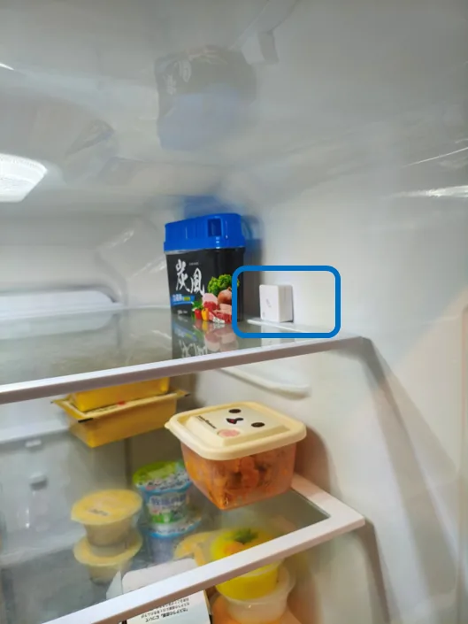
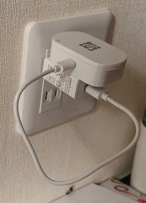
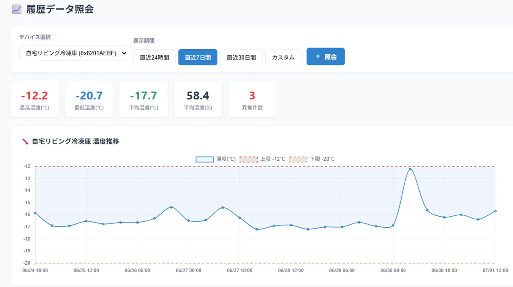
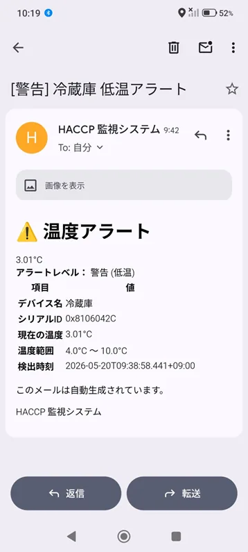

① 温湿度計測センサー
メーカー：モノワイヤレス株式会社
- 温湿度を15分間隔で自動計測
- 既存設備に後付け可能（レトロフィット）
メーカー：モノワイヤレス株式会社
メーカー：モノワイヤレス株式会社
AWS（Amazon Web Services）を採用


温湿度計測センサー
既存設備に後付けする形で温湿度を計測します。

GATEWAY
センサーからデータを収集し、Wi-Fi経由でクラウドへ送信します。
履歴データ照会
デバイスを選択し、期間を指定して温度・湿度の履歴データを確認できます。

異常検知メール
設定した温度範囲から外れた場合、メールによるアラート通知を行います。

温度アラートメール
実際の食品現場を想定し、温湿度データの継続的な記録、異常検知、記録作業の効率化などを検証していきます。